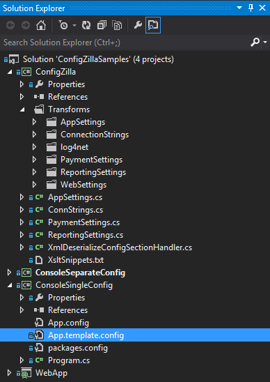

ConfigZilla is a tool for streamlining the management of those pesky .config files in .Net projects. The key to the ConfigZilla approach is that it creates a project called "ConfigZilla" in your solution, and this project then becomes the central location in which you specify the values for your config settings and create classes to access those settings.
The design of ConfigZilla has been motivated by scalability: I continually asked myself the question "how will this work if I have 100 settings in 100 projects with 100 different configurations?". Imagine needing to add or remove a connection string to all those projects, or needing to redirect your log4net logs for all websites and EXEs to a common folder, or to create bindings for a collection of WCF services that's different in each website. ConfigZilla can handle such situations with ease.
ConfigZilla uses MSBuild and XSL Transformations to work its magic. Both of these are standard technologies with wide applicability. They are a little esoteric compared to C# and HTML, but most tasks you will need to do can be handled with "cookie cutter" recipes, indeed when you install ConfigZilla into your project it will create a project that includes some "out of the box" ready-to-run examples. I believe most developers will be able to handle 95% of their requirements with "cut-and-paste-and-edit" and a minimum of thinking...
A C# class for type-safe access to your settings. Use this throughout your solution:
namespace CZ
{
/// <summary>
/// Class to return the AppSettings.
/// </summary>
public static class AppSettings
{
public static string Setting1
{
get { return ConfigurationManager.AppSettings["Setting1"]; }
}
}
}
An MSBuild .targets file to set property values depending upon $(Configuration):
<Project xmlns="http://schemas.microsoft.com/developer/msbuild/2003">
<PropertyGroup>
<!-- No condition and processed first means this Property Group specifies the defaults -->
<appSetting1>Value1Default</appSetting1>
</PropertyGroup>
<PropertyGroup Condition="'$(Configuration)'=='Release'">
<appSetting1>Value1Release</appSetting1>
</PropertyGroup>
</Project>
An XSLT file to set the setting to the value (all these files are merged then applied to the *.template.config files in your projects):
<xsl:template match="/configuration/appSettings/add[@key='Setting1']|/appSettings/add[@key='Setting1']">
<add key="Setting1" value="$(appSetting1)" />
</xsl:template>
<!-- Replace <AppSettingsBlock /> with the whole set -->
<xsl:template match="AppSettingsBlock" xml:space="preserve">
<appSettings>
<add key="Setting1" value="$(appSetting1)" />
<add key="Setting2" value="$(appSetting2)" />
</appSettings>
</xsl:template>
ConfigZilla is built on MSBuild v4.0, which shipped with Visual Studio 2010 and Microsoft .Net 4, so most modern machines should have it. Apart from that ConfigZilla is completely self contained, so once installed into a solution the it should compile anywhere, including any continuous integration environment that supports MSBuild.